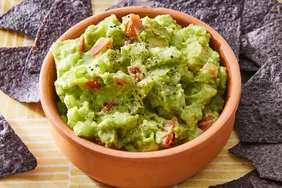

Home
Guacamole

Description
This quick and easy guacamole is (almost) too good to be true.
Ingredients
- Avocados: This easy guacamole recipe starts with two peeled and pitted avocados.
- Onions and tomatoes: Chopped onions and tomatoes add flavor, color, and texture.
- Seasonings: This flavorful guacamole is seasoned with fresh garlic, salt, and pepper.
- Lime juice: Fresh lime juice lends flavor and keeps the guacamole from browning.
Steps
- Gather all ingredients.
- Mash avocado in a medium serving bowl.
- Stir in onion, tomato, and garlic.
- Season with lime juice, salt, and pepper.
- Cover and chill guacamole for 30 minutes to allow flavors to blend.
- And now it's ready to serve!